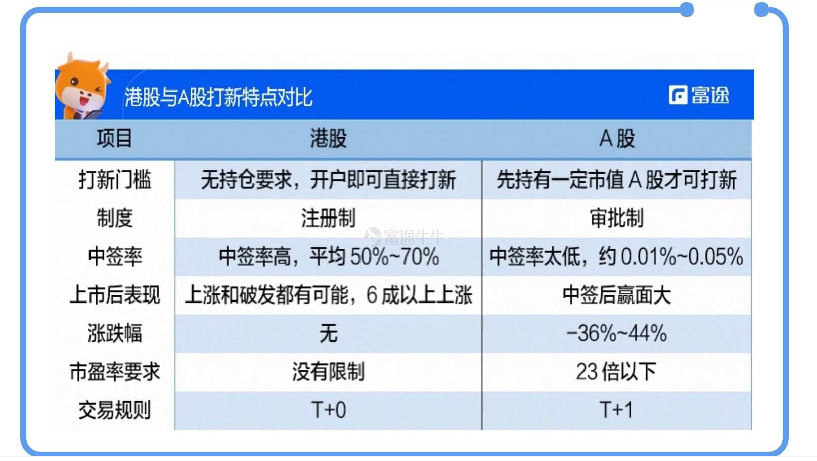
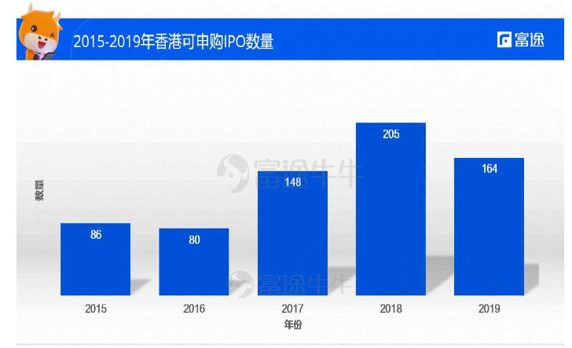
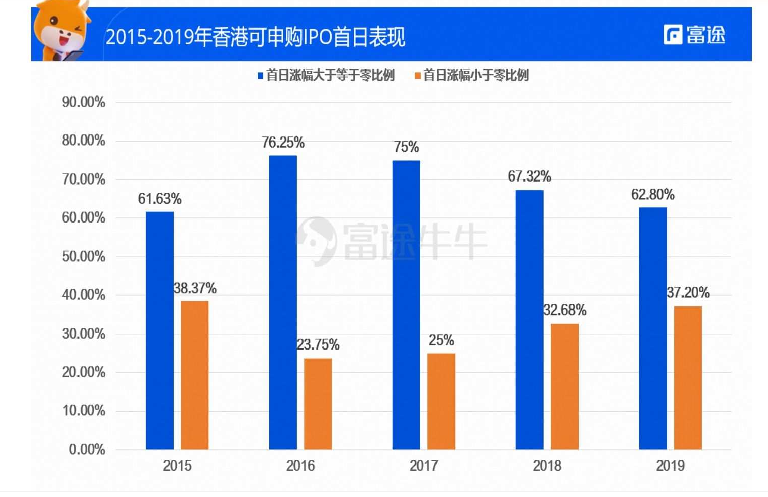
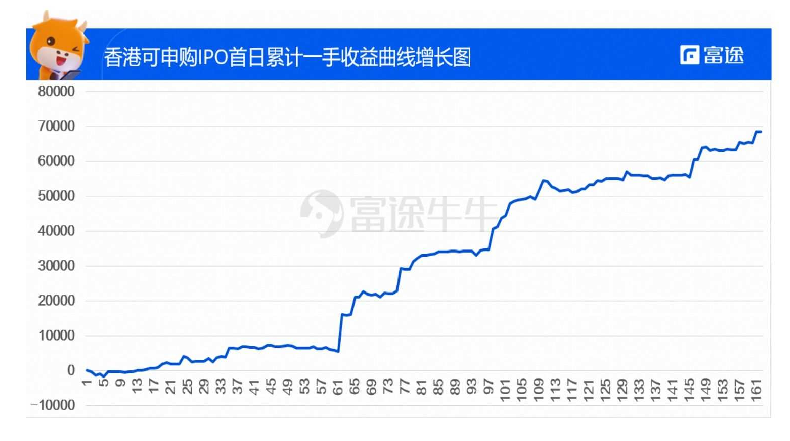

6.1.2.1. 打新秘籍 | 中签率高出两千倍？港股A股打新大不同！
继年初几大「超购王」席卷港股 IPO 市场之后，近期生物科技股又再次占据了新股市场的头条。随着越来越多国内外优秀的企业，特别是一些独角兽企业和新兴企业在香港上市，股民对于港股打新的热情也有增无减。
不过，你真的了解港股与 A 股的打新规则与技巧吗？快让我们一起来看看吧。
6.1.2.1.1. 01 港股A股打新大不同
目前，要想在港股市场认购新股，首先必须要有港股的证券账户，但并不要求有持仓，而A股打新则需要现持有一定市值的股票才可操作，沪港通也还没有开通打新的业务。
其次，港股与 A 股的上市制度也有所不同，港股采用了市场化程度较高的成熟证券市场所普遍采用的一种发行监管方式一一注册制，相比 A 股的审批制相对较为宽松，也没有市盈率的要求，因此企业赴港上市的节奏比起也会稍快。
一旦有公司申请在港交所上市，就会把其招股书挂在港交所的披露易页面下，并在招股书中会披露公司主营、财务、募资用途及未来发展、主要股东情况、风险等主要因素

总结起来如上表所示，下面我们重点从牛友们最关心的收益率和中签率两方面，来比较港股A股打新两者究竟有何不同：
6.1.2.1.2. 02 收益率：港股<A股
众所周知， A 股打新就是另一种形式的「买彩票」，中签后基本会有十个左右的涨停板，与此不同，在港股上市的新股并不能保证上市后一定是上涨的走势，甚至还有破发的风险。
回看 2019 年，香港交易所公开发行的新股共 164 只（包含一只基金），虽然少于 2018 年，但整体数量相比于历史情况还是较多的。

在上市的164只新股中，首日涨幅>= 0 的比例大约是62.80%，过去五年均保持在 60 ％一 80 ％的区间内：

那有些同学就要问了，收益率跟 A 股差那么多，为什么要在港股打新呢？别着急，下面就来说说港股打新的绝对优势一一中签率。
6.1.2.1.3. 03 收益率：港股>A股
港股市场由于发行制度及发行方式与 A 股有较大的区别，所以在中签率上有较大的差别。
新股发行之前，如果认购的人比较多，将通过抽签决定股票的分配。其中一个重要的概念是一手中签率，即只申购一手的情况下，中签一手的概率。
A 股普遍中签率在 0 . 03 ％左右，但港股实施的是优先保证一户一签的分配政策，尽量每个申购者和散户都能抽到一手，剩余股票再根据递减原则进行分配的公平分配机制，这样的政策也使得港股打新平均中签率在 60 ％以上，是 A股的 2000 倍之多！
这种机制下在保证了分配相对公平的同时，给了散户投资者更大的参与感，反观 A 股，尽管基本上是中签就有钱赚，但中签的概率实在太低，抽中赚钱的可能性微乎其微。
事实上，从历史的首日涨幅来看，港股打新的收益还是非常可观的，牛牛简单统计了一下，如果 2019 年每只新股都打一手的话，全年收益可以达到接近 70000 港币！

6.1.2.1.4. 总的来说
总的来说，港股 IPO 打新相对 A 股会存在更多的机会，港股打新的保证一手中签率原则使得打新更适合小规模资金，因此为了分担风险增加中签率，牛友们采用小资金，每支新股申购一手是个不错的策略哦~